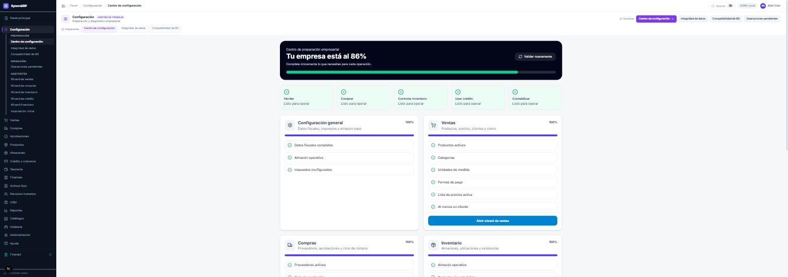
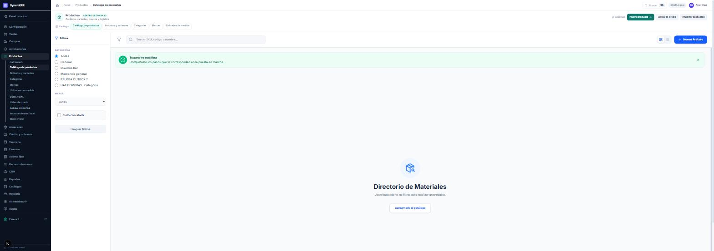
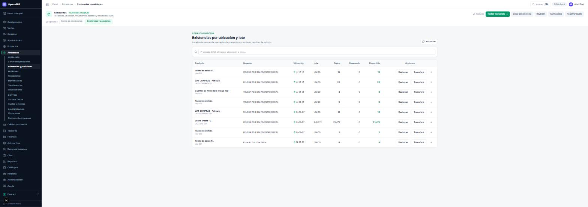
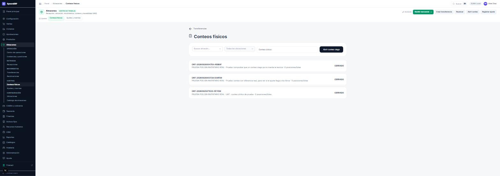

Los quince módulos, proceso por proceso: qué campos se capturan, quién los captura, qué estados recorre cada documento y qué escribe el sistema por su cuenta. Todo esta parte es idéntica en las tres modalidades.
administrador contador
Un ERP recién instalado desconoce el negocio: no sabe qué se vende, con qué impuestos, desde qué almacén ni contra qué cuentas contables. Este capítulo determina si el resto del sistema funciona. Una instalación mal preparada no falla el primer día: falla tres semanas después, cuando se intenta facturar y falta una clave, o al cerrar el mes y aparecen operaciones sin contabilizar.
Configuración › Centro de configuración. Recorre la empresa, verifica módulo por módulo los requisitos de operación y presenta el resultado como porcentaje y lista de puntos resueltos y pendientes.

La lectura rápida son las cinco capacidades superiores: «Listo para operar» significa que ese circuito puede ejercerse de extremo a extremo. Si falta algo, la pantalla indica qué.
| Asistente | Deja configurado |
|---|---|
| Wizard financiero | Catálogo de cuentas, categorías contables, fecha a partir de la cual se controla la contabilidad y saldos iniciales. Debe ejecutarse primero. |
| Wizard de ventas | Productos activos, categorías, unidades de medida, formas de pago, lista de precios y al menos un cliente. |
| Wizard de compras | Proveedores, departamentos de los solicitantes y ciclo de aprobación de compra. |
| Wizard de inventario | Almacenes, ubicaciones y existencias iniciales. |
| Wizard de crédito | Productos de crédito, plazos, tasas y matriz de firmas para autorizar líneas. |
| Importación inicial | Carga masiva desde hoja de cálculo de productos, clientes, proveedores y existencias. |
El asistente financiero va primero porque de él dependen las cuentas contra las que todo lo demás contabiliza. Configurar ventas antes que contabilidad produce ventas cuya póliza no puede generarse, y ese fallo no se manifiesta en la pantalla de ventas: aparece semanas después en Asientos pendientes o, peor, al cerrar el mes.
Configuración › Integridad de datos. Control preventivo que se ejecuta después de importar, depurar o migrar información. Verifica la coherencia interna de los datos; por ejemplo, que la existencia consolidada de un producto coincida con la suma de sus ubicaciones.
Abrir el centro de configuración y anotar el porcentaje de cada módulo. Elegir el más bajo, entrar en su asistente y completar un paso. Volver al centro, pulsar «Validar nuevamente» y comprobar el incremento. Ese ciclo se repite durante toda la puesta en marcha.
administrador comprador contador
Los catálogos son los sustantivos del sistema. Todo documento los referencia, de modo que un catálogo incompleto se propaga a cada documento que lo use — y corregirlo después no corrige los documentos ya emitidos.
Productos › Catálogo de productos › Nuevo artículo.

| Campo | Qué es y qué regla lo gobierna | |
|---|---|---|
| nombre | OBLIGATORIO | Descripción comercial. Es lo que se busca en el punto de venta y lo que sale en la factura. |
| sku | OBLIGATORIO | Código interno. Único por empresa. Conviene fijar una convención antes de cargar el catálogo: cambiarlo después obliga a reetiquetar. |
| tipo | OBLIGATORIO | Determina si el artículo mueve inventario. Ver el cuadro siguiente. |
| categoriaId | OBLIGATORIO si mueve inventario | De la categoría cuelgan las cuentas contables del producto. Sin ella la mercancía entra y la póliza no se genera. |
| unidadMedidaId | OBLIGATORIO | Cómo se cuenta. Enlaza con la ClaveUnidad del SAT. |
| impuestoId | OBLIGATORIO para facturar | IVA 16 %, 0 %, exento o retención. |
| precioCompra | opcional | Último costo conocido. El sistema lo mantiene solo con cada recepción; se captura únicamente para el arranque. |
| precioVenta | opcional | Si se define margen, se recalcula con cada cambio de costo. |
| margen | opcional | Porcentaje sobre el costo. Es lo que convierte una recepción en un precio nuevo. |
| claveProdServ | OBLIGATORIO para facturar | Clave del catálogo de productos y servicios del SAT. |
| claveUnidad | OBLIGATORIO para facturar | Clave de unidad del SAT. |
| marcaId | opcional | Sólo clasificación y filtros. |
| codigoBarras | opcional | Permite vender con lector en el punto de venta. |
| stockMinimo | opcional | Alimenta la alerta de existencia baja del panel ejecutivo. |
| activo | opcional | Un producto inactivo no se puede vender ni requisitar, pero conserva su historia. |
| Tipo | ¿Mueve inventario? | Uso |
|---|---|---|
| FISICO | Sí | Lo que se compra, se almacena y se vende. |
| CONSUMIBLE | Sí | Lo que se consume en la operación y no se revende. |
| MATERIA_PRIMA | Sí | Entra en una receta o escandallo. |
| SERVICIO | No | Mano de obra, instalación, consultoría. No tiene existencia ni requiere categoría contable de inventario. |
Todo producto que mueve inventario necesita categoría, porque de ella cuelgan las cuentas de inventario, costo de venta e ingreso. Sin categoría, la recepción se registra en verde, la existencia sube y el asiento queda encolado indefinidamente. Se detecta en Finanzas › Asientos pendientes y bloquea el cierre del mes.
| Catálogo | Función, más allá de clasificar |
|---|---|
| Categorías | Contienen las cuentas contables del producto: inventario, costo de venta e ingreso. Es el catálogo más importante del sistema y el que con más frecuencia se descuida. |
| Unidades de medida | Definen cómo se cuenta y enlazan con la ClaveUnidad del SAT. Admiten equivalencias —caja de 12 piezas— que el punto de venta y la recepción utilizan. |
| Marcas | Clasificación y filtros. |
| Listas de precio | A qué precio se vende y a quién. Una empresa puede tener varias —mostrador, mayoreo, convenio— y un cliente puede tener asignada la suya. |
| Impuestos | IVA por tasa, exentos y retenciones. Se asignan por producto y determinan el cálculo del CFDI y de la declaración. |
Catálogos › Clientes › Nuevo cliente.
| Capa | Contenido | Quién la mantiene |
|---|---|---|
| Identificación | Nombre o razón social, RFC, régimen fiscal, uso de CFDI, domicilio fiscal, correo y teléfono. Es lo que se imprime en la factura. | quien da de alta |
| Comercial | Lista de precios asignada, condiciones, vendedor responsable. | ventas |
| Crediticia | Línea autorizada, plazo, nivel de riesgo, expediente de verificación, disponible y utilizado. | crédito, con firmas |
Se solicita y recorre la matriz de firmas (capítulo 6). Si el campo aparece bloqueado en el expediente, el comportamiento es el correcto. Un importe de línea capturado directamente sería una autorización sin firma y sin rastro.
Compras › Proveedores. Datos fiscales equivalentes a los de un cliente, más condiciones de pago y días de crédito. Según la configuración de la matriz, el alta y la activación de un proveedor pueden requerir aprobación: quien da de alta a un proveedor determina a quién puede pagarse, y esa decisión no suele corresponder a una sola persona.
Dar de alta un producto FÍSICO completo: categoría con cuentas contables, unidad, impuesto, ClaveProdServ, ClaveUnidad y precio en la lista por omisión. A continuación, un cliente de contado con RFC válido. Verificar en el centro de configuración que los módulos correspondientes incrementaron su porcentaje.
almacenista
El inventario no es una lista de cantidades: es la ubicación física de cada artículo. El sistema lleva existencias por almacén, por ubicación dentro del almacén y por lote cuando el producto lo requiere. Eso permite indicar «está en B-02-07» en lugar de «hay ocho en algún sitio».

| Magnitud | Definición |
|---|---|
| Físico | Lo que hay en la posición. |
| Reservado | Lo comprometido en un documento que todavía no ha salido. |
| Disponible | Físico menos reservado. Es lo que se puede vender. |
Vender contra el físico en lugar del disponible es el mecanismo por el que se compromete dos veces la misma mercancía. El punto de venta valida siempre contra el disponible.
Almacenes › Ubicaciones › Nueva ubicación.
| Campo | Qué es | |
|---|---|---|
| almacenId | OBLIGATORIO | Almacén al que pertenece. |
| codigo | OBLIGATORIO | El identificador que se lee en el estante. Máximo 80 caracteres. |
| zona | opcional | Agrupación lógica: refrigerado, seco, cuarentena. |
| pasillo · rack · nivel · posicion | opcional | Descomposición de la dirección. Sirve para ordenar la ruta de conteo y de surtido. |
| capacidadMaxima | opcional | Límite de la posición. |
| estado | opcional | Disponibilidad operativa de la posición. |
Un producto puede tener ubicaciones asignadas, con una marcada como principal. Los campos son esPrincipal, capacidadAsignada, stockMinimo y stockMaximo. En la recepción, las posiciones asignadas aparecen marcadas y en primer lugar; las demás requieren confirmar la asignación.
| Operación | Qué hace | Efecto contable |
|---|---|---|
| Recepción | Ingresa mercancía contra una orden de compra. | Póliza de entrada; actualiza costo y precio |
| Transferencia | Mueve mercancía entre almacenes, con salida y recepción. | Traspaso; no altera el valor total del inventario |
| Reubicación | Mueve mercancía dentro del mismo almacén. | Ninguno: no cambia nada valuable |
| Conteo físico | Cuenta lo existente y lo compara con el registro. | Ninguno hasta que se aplique el ajuste |
| Ajuste o merma | Corrige la existencia y registra el motivo. | Póliza de ajuste o de merma |
Es un documento en dos actos: quien envía y quien recibe. Entre ambos, la mercancía está en tránsito y no pertenece a ninguno de los dos almacenes.
| Campo | Qué es | |
|---|---|---|
| almacenOrigenId | OBLIGATORIO | De dónde sale. |
| almacenDestinoId | OBLIGATORIO | Adónde va. |
| motivo | OBLIGATORIO | Por qué se mueve. Máximo 255 caracteres. Es lo que se lee al auditar el movimiento. |
| detalles[] | OBLIGATORIO | Al menos un renglón, cada uno con productoId, ubicacionOrigenId y cantidad. |
| Campo | Qué es | |
|---|---|---|
| detalleId | OBLIGATORIO | Qué renglón de la transferencia se recibe. |
| ubicacionDestinoId | OBLIGATORIO | En qué posición se guarda. |
| cantidadRecibida | opcional | Si se omite, se asume la enviada. Capturarla permite documentar faltantes. |
| cantidadDanada | opcional | Lo que llegó dañado. No entra al disponible. |
| observaciones | opcional | Máximo 500 caracteres. |

| Estado | Significado y qué lo hace avanzar |
|---|---|
| BORRADOR | Definido pero sin abrir. Todavía se puede modificar su alcance. |
| ABIERTO | Congelado el alcance; puede empezar la captura. |
| EN_CONTEO | Hay capturas registradas. |
| PENDIENTE_AUTORIZACION | Cerrada la captura, con diferencias que requieren aprobación antes de ajustar. |
| AJUSTADO | Aplicado el ajuste: la existencia cambió y se generó la póliza. |
| CERRADO | Conteo concluido sin ajuste o ya ajustado. |
| CANCELADO | Anulado sin efecto. |
Si quien cuenta ve la existencia registrada, cuenta esa cifra. El conteo ciego es la única modalidad en la que el número procede de la estantería y no de la pantalla. Cuesta algo más de tiempo y es la única válida para efectos de valuación.
Un ajuste escribe su póliza contra la cuenta de inventario de la categoría y la cuenta de ajuste o merma. Si el producto carece de categoría, el ajuste se aplica y el asiento queda encolado; se revisa en Finanzas › Asientos pendientes.
Abrir un conteo ciego de una sola ubicación con dos productos. Capturar una cantidad distinta a propósito en uno de ellos. Cerrar el conteo, revisar la diferencia y aplicar el ajuste. Localizar después en Finanzas › Libro diario la póliza generada.